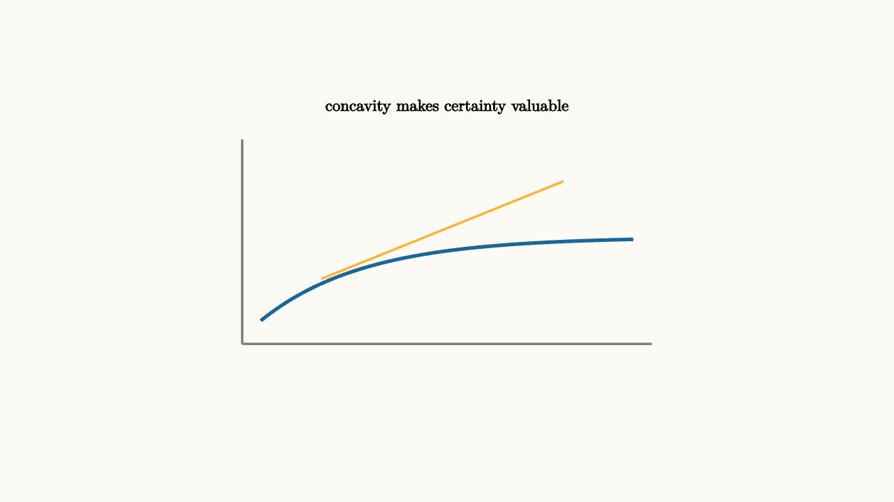

Risk Aversion Bends Utility
Money is measured in dollars, but satisfaction from money often has diminishing returns. The first $1000$ of emergency savings may matter more than the tenth. Economists model this with a utility function $U(w)$ that is increasing and concave.
This is easiest to feel in a budget. If you have $500$ in savings, an extra $500$ can prevent overdraft fees, missed rent, or a crisis. If you already have $50,000$ saved, the same extra $500$ is still useful, but it changes life less. Concavity draws that idea as a curve whose slope gets smaller as wealth rises.
Risk aversion appears when
The utility of the average wealth is greater than the average utility of the risky wealth.
For a concrete gamble, suppose wealth will be either $0$ or $100$ with equal probability. The expected wealth is $50$. With a concave utility such as $U(w)=\sqrt w$, the utility of $50$ is about $7.07$, while the average utility of the gamble is
The guaranteed $50$ gives more utility than the risky 50-dollar average.

source
background = [0.985, 0.98, 0.955, 1]
camera = Camera(4.8b)
mesh curve = block {
. stroke{GRAY, 2} Line(start: [-2.2, -1.0, 0], end: [2.2, -1.0, 0])
. stroke{GRAY, 2} Line(start: [-2.2, -1.0, 0], end: [-2.2, 1.2, 0])
. stroke{BLUE, 3} ExplicitFunc(|x| 0.9 * (1 - exp(-0.9 * (x + 2.0))) - 0.75, [-2.0, 2.0, 120])
. stroke{ORANGE, 2} Line(start: [-1.35, -0.3, 0], end: [1.25, 0.75, 0])
. center{[0, 1.55, 0]} Text("concavity makes certainty valuable", 0.62)
}
"concave utility"
play Fade(0.6)This is the mathematics behind insurance. A person pays a premium to avoid a low-probability large loss. The insurance company can pool many independent risks, while the individual cares deeply about avoiding financial disaster.
The amount someone would accept with certainty instead of a gamble is called a certainty equivalent. For a risk-averse person, the certainty equivalent lies below the expected dollar value of the gamble. The difference is a risk premium, the amount of expected money they are willing to give up to remove uncertainty.
source
param risk = 0.5
background = [0.985, 0.98, 0.955, 1]
camera = Camera(4.8b)
let Gamble = |risk| block {
. fill{BLUE} center{[-1.1, 0, 0]} Rect([0.4, 1.0])
. fill{ORANGE} center{[1.1, 0.25 * risk, 0]} Rect([0.4, 1.0 + risk])
. center{[-1.1, -1.0, 0]} Text("certain", 0.62)
. center{[1.1, -1.0, 0]} Text("risky", 0.62)
. center{[0, 1.45, 0]} Text("same average can carry different comfort", 0.62)
}
"small risk"
mesh g = Gamble(risk: $risk)
play Fade(0.5)
"larger spread"
risk = 1.25
g = Gamble(risk: $risk)
play Lerp(1.0)Risk preferences also shape portfolio choice, job decisions, warranties, deductibles, and public policy. The math does not say everyone has the same utility curve. It gives a language for comparing attitudes toward uncertainty.
This language also explains why deductibles exist. A person may insure against a huge loss while keeping small losses self-funded. Small losses are annoying, but large losses can move wealth into the steep part of the utility curve where each dollar matters a great deal. Insurance is most valuable where the utility curve is steepest.
Risk aversion can vary by scale. The same person may gladly take a small fair gamble for fun and reject a fair gamble involving rent money. Utility curves are local descriptions of how stakes feel around a wealth level. That is why economists ask about both preferences and the size of the risk before predicting behavior.
The lesson to keep: risk aversion comes from concave value. A fair gamble in dollars can be unattractive in utility, because the location of the dollars matters.